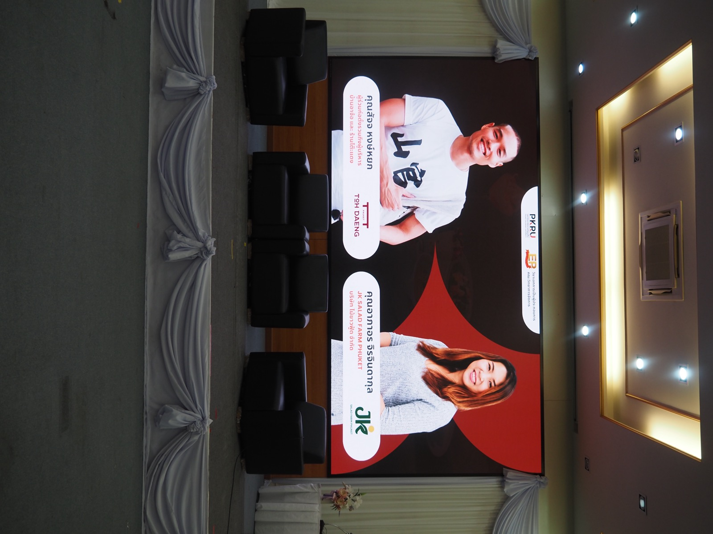
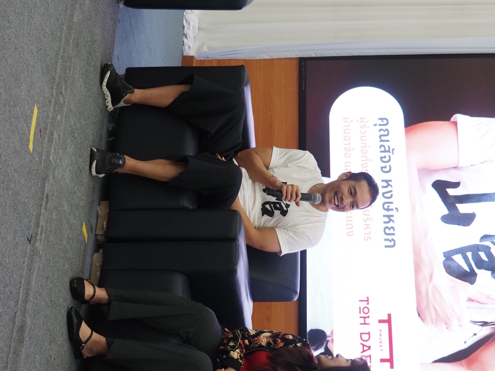
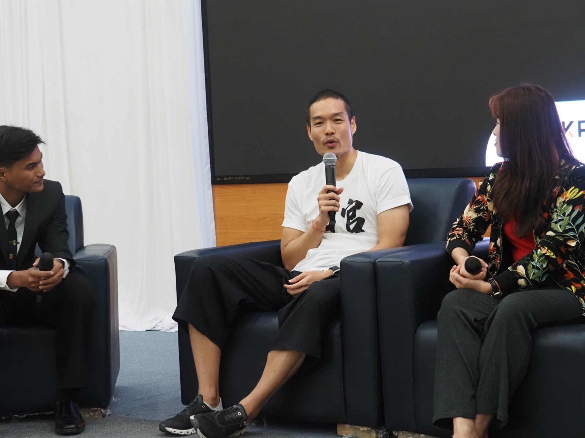
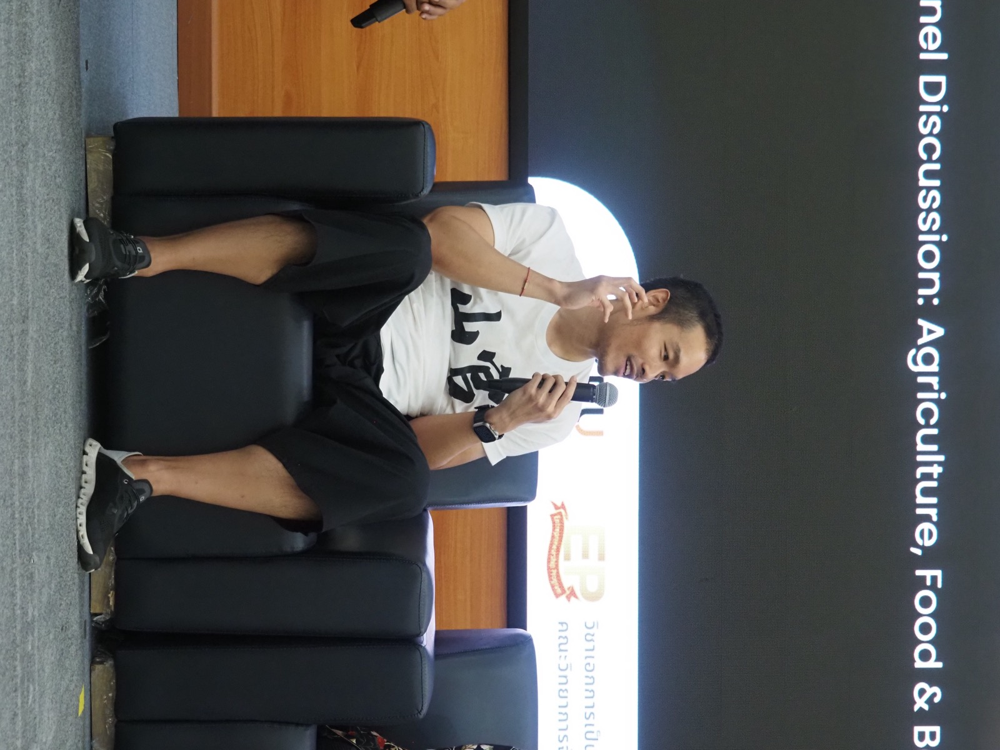
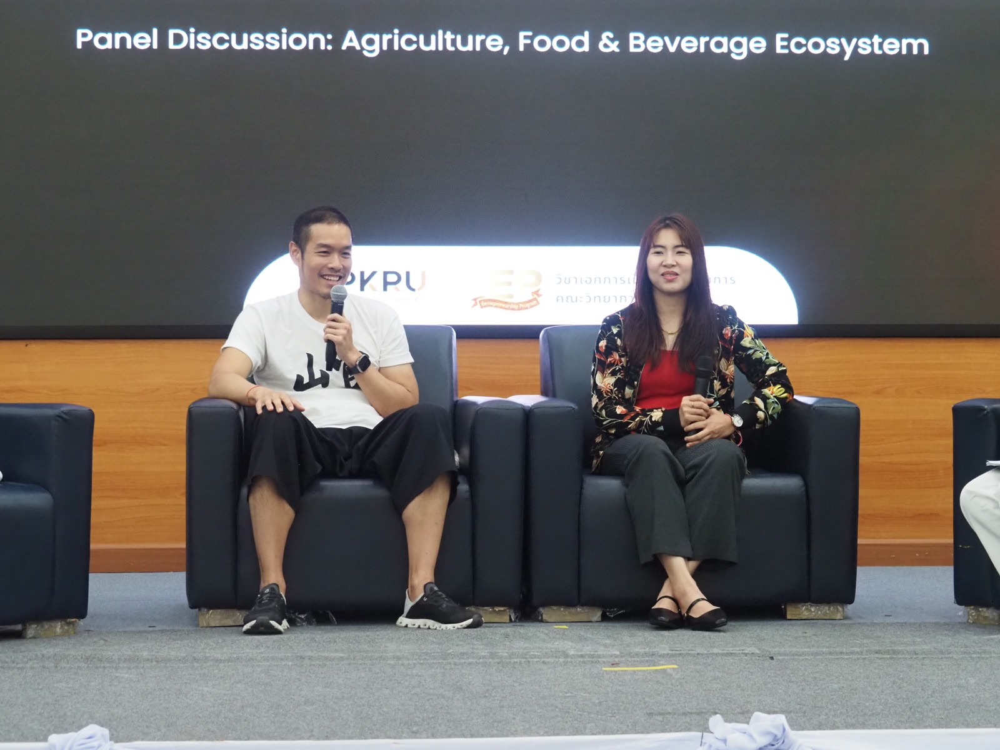
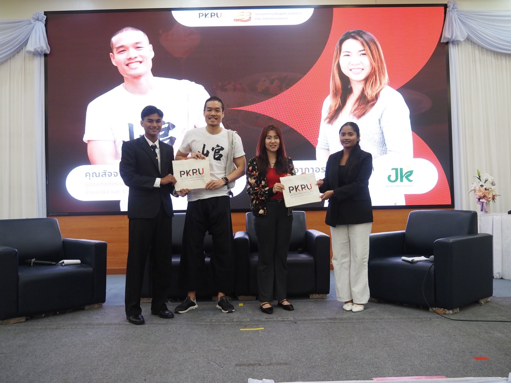
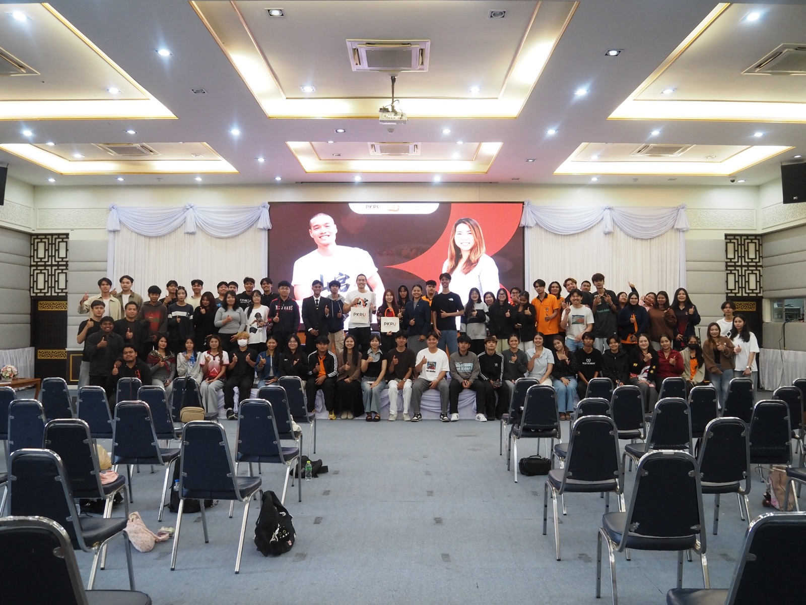

2569 · เวที · เหตุการณ์
เวทีเสวนา "จากของใกล้ตัว สู่ลูกค้าคนแรก" กับนักศึกษาผู้ประกอบการ ม.ราชภัฏภูเก็ต







เวทีเสวนา "จากของใกล้ตัว สู่ลูกค้าคนแรก — โอกาสในธุรกิจ Agriculture, Food & Beverage" ของวิชาเอกการเป็นผู้ประกอบการ คณะวิทยาการจัดการ มหาวิทยาลัยราชภัฏภูเก็ต — นั่งคู่กับผู้ประกอบการผักไฮโดรโปนิกส์ที่ส่งโรงแรมในภูเก็ต พิธีกรถามคำถามชุดเดียวกันให้ตอบสลับกัน 71 นาที แล้วปิดด้วยคำถามจากนักศึกษา
เรื่องที่เล่า (แต่ละช่วงมีบันทึกอยู่ในไทม์ไลน์ตามปีที่เกิดขึ้น): เลือกเรียนวิศวะเพราะชอบเกม · เป็นวิศวกรระบบการเงินในธนาคาร 7-8 ปี · ที่บ้านเรียกกลับตอนอายุ 32-33 แต่ดื้ออยู่ต่ออีก 2 ปีจนโปรเจกต์เสร็จ · กลับมาเจอวัฒนธรรมบริหารแบบครอบครัวที่ "สั่งซ้าย ครับ แล้วก็นิ่ง" · ขับรถหาสิ่งที่จะทำให้อากงมีความสุข แล้วเจอบ้านเรือนหอของท่านที่ร้างมา 37 ปี · เปิดร้านอาหารทั้งที่ไม่เคยทำอาหาร ไม่เคยเสิร์ฟ ไม่เคยตั้งราคา · มิชลินมาตรวจ 5 ครั้ง · พนักงานทุกคนคือคนในชุมชน เรียกกันว่าแม่ว่ายาย · และวันนี้ "มี AI เป็นลูกทีมเป็นร้อย"
9 ข้อที่ฝากนักศึกษา (ถอดจากคำพูดจริงบนเวที)
- "ขอแค่ว่า ทำแล้วทำให้จริงอย่างเดียว ตั้งใจจริงให้ดีที่สุด ได้ไม่ได้ไม่ว่ากัน"
- มองคู่แข่งเป็นเพื่อน — "พี่มีโต๊ะน้อย แข่งไปก็เท่านั้นแหละ" จับมือกับร้านข้างเคียงออกเมนูร่วม ลูกค้าได้ทั้งสองฝ่าย
- ฟังคำติ — "ถ้าเงียบอันตรายที่สุด" ลูกค้าที่ไม่บอกเราจะไปบอกคนอื่น
- ไม่ต้องเรียนตรงสาย — "เรียนที่เราชอบ แล้ววิชาที่เราเรียนนั่นแหละ มันจะไปอยู่ในเนื้องานของเราเอง"
- ระหว่างเรียน "อยากให้หาอาชีพของตัวเองไปด้วยเลย" ยุคนี้เปลี่ยนเร็วเกินกว่าจะรอเรียนจบ
- อุปสรรคคือโอกาส — "เจออุปสรรคเยอะเท่าไหร่ก็ยิ่งดี พอเราแก้ได้ เราจะแก้ได้ใหญ่ขึ้นไปเรื่อยๆ"
- "เจ๊งในกระดาษก่อน ก่อนที่จะไปเริ่มทำจริงแล้วเราเหนื่อย"
- "อะไรที่เราไม่รู้อันตรายมาก" — ต้องหาผู้รู้มาเป็นที่ปรึกษา และเดี๋ยวนี้ AI ตอบได้เกือบหมด · แต่ที่แย่กว่าไม่รู้คือ "รู้แล้วยังแก้ไม่ได้"
- "ทำยังไงก็ได้ให้งานนั้นมีความสุข เพราะเราจะอยู่กับปัญหานั้นทุกวัน"
และประโยคที่คนฟังหัวเราะทั้งห้อง: "เกลียดใครให้ไปทำร้านอาหาร" — ของสดเสียเร็ว เมนูต้องปรับทุกวันตามวัตถุดิบ แต่ก็เป็นงานที่ "ชอบพูด ชอบเจรจา ชอบคุยกับลูกค้า" ได้ทุกวัน
หลังจบเวที มีน้องกลุ่มหนึ่งเดินมาบอกว่าอยากมาสมัครงานที่โต๊ะแดง — ถือว่าวันนั้นได้ "ลูกค้าคนแรก" ของเวทีไปแล้ว